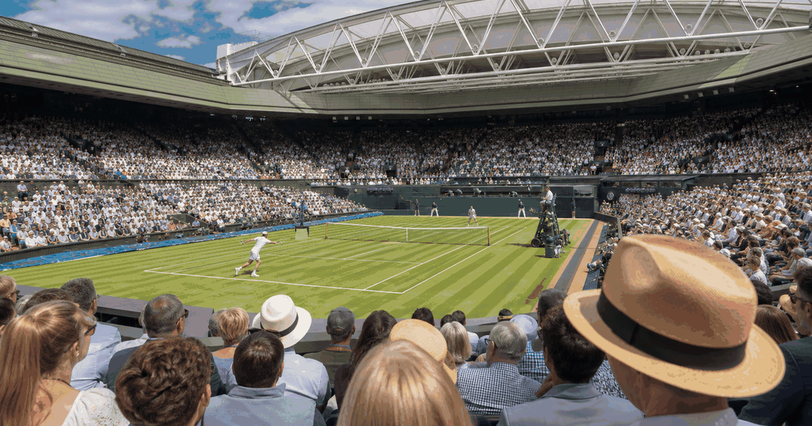

Wimbledon
First held1877
SurfaceGrass
Top 4 title leaders
1 United StatesMartina Navratilova
United StatesMartina Navratilova
9
2 SwitzerlandRoger Federer
SwitzerlandRoger Federer
8
3United StatesSerena Williams
7
4United StatesPete Sampras
7
 More tennisTennis topic
More tennisTennis topicMore tennis events, venues and calendar moments.
Wimbledon 2026 in London
Wimbledon guide
Wimbledon belongs in the sport, tennis, wimbledon collection on OneSliders. Use this page as the compact evergreen entry point: start with what the event is, then scan the current edition details, location cues, schedule context and links back into the wider topic. The page is kept short by design, but it should still give enough unique context to distinguish this event from nearby fixtures, annual editions and broader category listings.